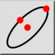
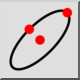
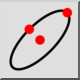
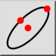

Эллипс по центру, точке, отношению
Панель инструментов / Иконка:
 

Меню: Начертить > Эллипс > Эллипс по центру, точке, отношению
Горячая клавиша: E, P
Команды: ellipse | ep
Это автоматический перевод.
Панель инструментов / Иконка:
 

Меню: Начертить > Эллипс > Эллипс по центру, точке, отношению
Горячая клавиша: E, P
Команды: ellipse | ep
Draws ellipses with a given center, major axis and minor axis.